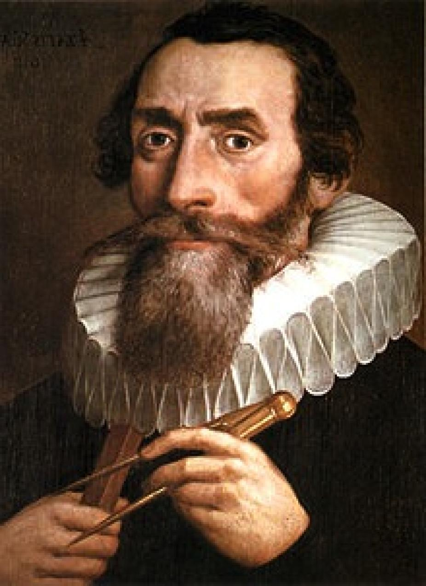
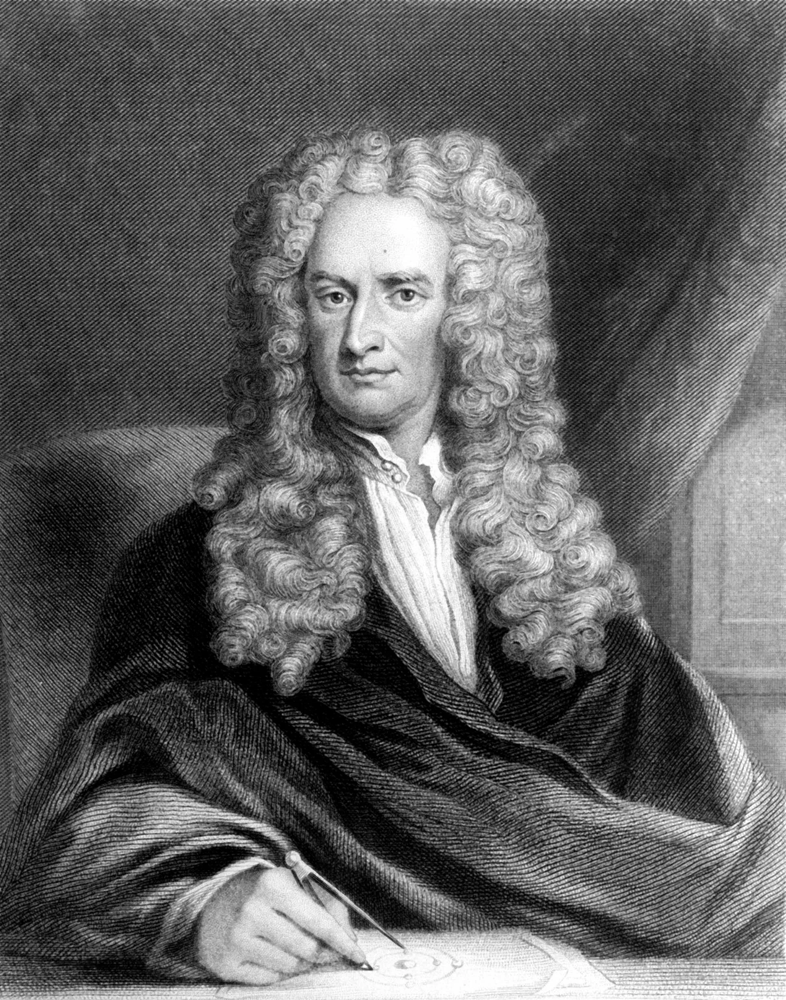
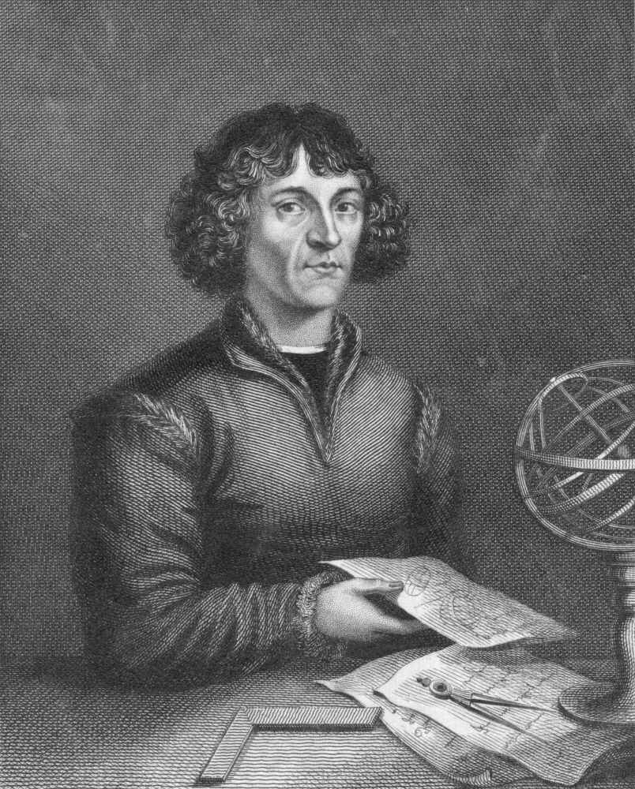
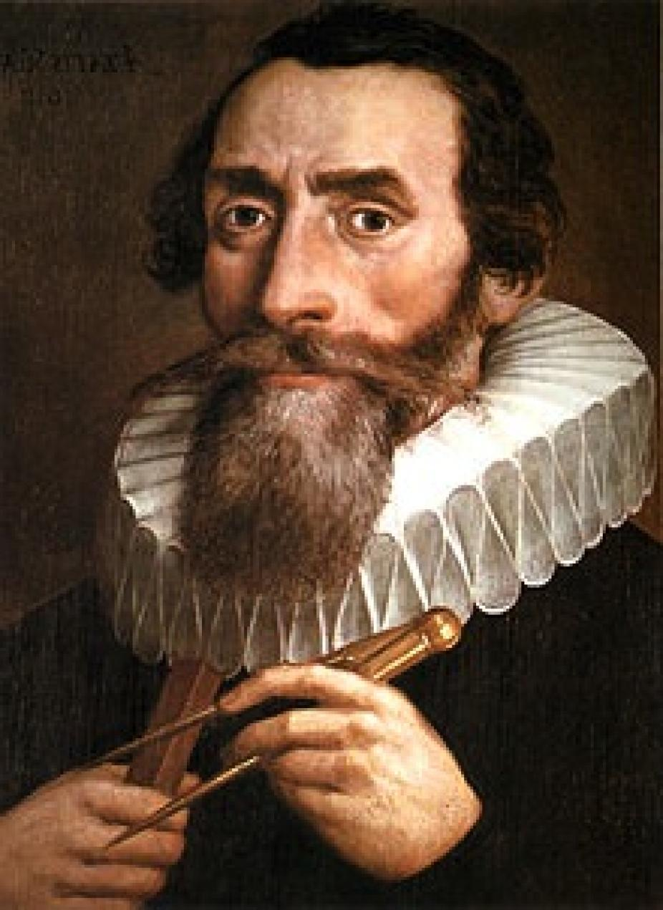
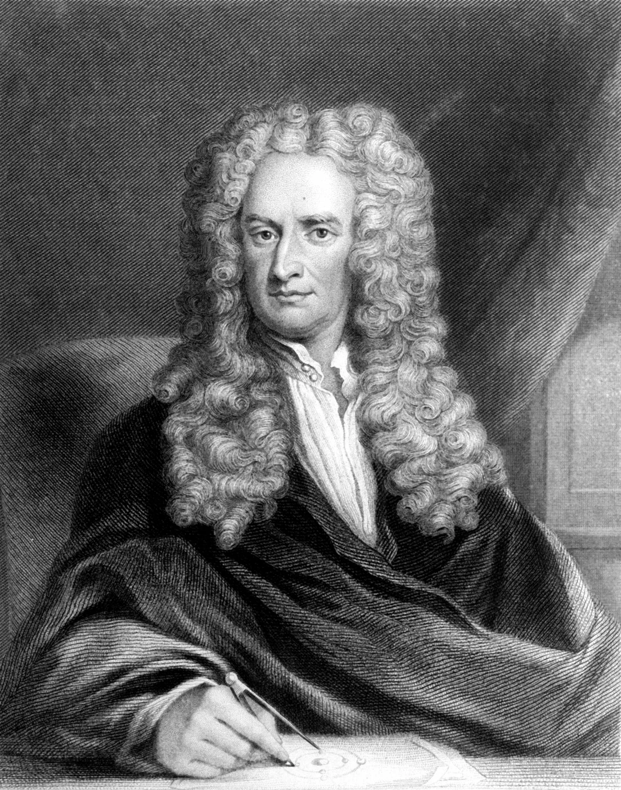
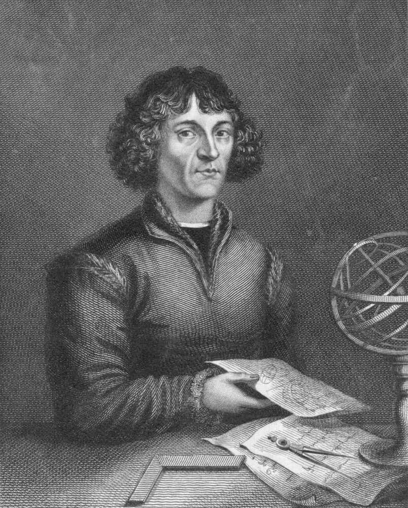

IntroductionThroughout history, science has sought to illuminate the mysteries of the natural world, uncovering truths through observation, experimentation, and logical reasoning. However, the origins of science are intricately woven with spiritual and philosophical pursuits, a blend largely forgotten or dismissed in modern discourse. This page explores the profound historical intersection between science and spirituality, considering how ancient knowledge systems and esoteric traditions have influenced scientific thought. From the early insights of the Sumerians and Egyptians to the mathematical mysticism of Pythagoras and the profound theories of Kepler, Newton, and Einstein, science has often straddled a line between empirical discovery and spiritual exploration. Secret societies like Freemasonry have also played a significant role in the scientific advancement of the West, emphasizing hidden knowledge and sacred geometry. These societies, along with scientific luminaries, have viewed science not merely as a mechanical discipline but as a path to understand a divine order in the universe. As science evolved, particularly through the Renaissance and Enlightenment, it began to distance itself from spiritual interpretation, favoring secular and empirical approaches. Yet, the influence of ancient spiritual beliefs persists in subtle ways, inspiring modern scientific inquiry even when unacknowledged. By revisiting this historical perspective, we aim to uncover how science, both past and present, may still be guided by forces beyond human understanding. 
ScienceScience is the process of learning about the world through observation, experiments, and logical reasoning. It helps us understand how nature works and our place in it. The word "science" comes from the Latin term for "knowledge," showing that it’s about gaining a deeper understanding of the world around us. From the stars in the sky to the smallest particles, science helps us make sense of the universe. Science didn’t always look the way it does today. Thousands of years ago, early scientists were often spiritual leaders or priests who sought to explain natural events through a combination of religious beliefs and practical observations. Ancient civilizations such as the Sumerians, Egyptians, and Greeks laid the foundations of science, but they didn’t separate it from their spiritual beliefs as we do today. Instead, they saw studying the world as a way to understand the divine. For instance, the Sumerians observed the stars to gain insight into their gods, and the Egyptians developed medicinal practices closely linked to their religious rituals. The origins of science are deeply rooted in the spiritual and religious practices of ancient civilizations. Early humans observed natural phenomena and sought to explain them, leading to the development of early scientific thought. In ancient Mesopotamia, the Sumerians pioneered astronomy and mathematics. The Egyptians made significant advancements in medicine, agriculture, and engineering. Greek philosophers like Pythagoras and Aristotle laid the foundations for disciplines such as biology, physics, and astronomy. However, what is often overlooked is the spiritual dimension that permeated these early scientific endeavors. The Transformation of Science: From Spiritual to SecularAs scientific thought evolved, a significant transformation occurred during the Renaissance and Enlightenment periods (14th–18th centuries). While early scientists often relied on spiritual beliefs to explain the natural world, this era marked a shift. Scientists increasingly focused on empirical evidence and logical reasoning, distancing themselves from the spiritual interpretations that had long shaped scientific inquiry. However, many scientists during the Scientific Revolution maintained a deep connection to their faith. Figures such as Johannes Kepler, Isaac Newton, and Robert Boyle believed that science could unveil the divine order of the universe. Kepler, for instance, described the universe as a reflection of God's geometric plan, saying, "The world of nature, the world of man, the world of God—these three worlds are a single world." Newton’s alchemical interests reveal his belief that hidden spiritual principles guided natural phenomena. A prominent example of how secret societies like Freemasonry influenced the development of science can be found in the alchemical origins of modern chemistry. Alchemy, closely associated with Freemasons, aimed not only to transform base metals into gold but also to achieve spiritual purification. Scientists like Isaac Newton and Robert Boyle were deeply involved in alchemical studies, believing that alchemy revealed the hidden truths of the natural world. Their work, grounded in spiritual beliefs, shaped the foundations of modern chemistry. Newton’s work on the nature of light and Boyle’s formulation of gas laws were both shaped by their alchemical studies. Freemasonry’s influence on science extended further during the Enlightenment. The founding of the Royal Society in 1660, one of the most prestigious scientific institutions, had significant Masonic involvement. Prominent members like Sir Christopher Wren and Robert Boyle were Freemasons, who viewed scientific inquiry as a way to explore divine principles. Their lodges served as meeting places for intellectual and spiritual discussions, blending scientific and spiritual thought. Another secret society that influenced scientific development during the Enlightenment period was the Bavarian Illuminati. Founded in 1776 by Adam Weishaupt, the Illuminati promoted reason, secularism, and intellectual freedom, aligning themselves with the Enlightenment ideals of the time. Many prominent scientists and philosophers of the Enlightenment were either members or closely associated with the society, which sought to challenge the established religious and political institutions. While the Illuminati are often shrouded in conspiracy theories, their influence on the scientific and intellectual landscape of Europe was real. They encouraged free thought, which fostered an environment where scientific inquiry could flourish independently of religious dogma. Though the Illuminati as an organized society was short-lived, its impact on the culture of the Enlightenment helped to create a space where science could evolve into a more secular discipline. Despite this, modern science has largely downplayed or ignored the spiritual underpinnings that were once central to its development. Today, logic and empirical observation dominate scientific discourse, often to the exclusion of the supernatural. This shift is not just methodological but also cultural: those who generate theories through empirical study are celebrated, while the spiritual insights that may have contributed to their discoveries are frequently dismissed or forgotten. The mystical experiences that once inspired great scientific minds have been relegated to the background, overshadowed by the emphasis on observable evidence. In my section on the patriarchs, I will briefly explore the potential connections between the theories of some of the most influential figures in the history of science and the personal beliefs that may have influenced those theories. Additionally, I will examine how these scientific ideas often reflect existing spiritual theories that align with widely accepted scientific concepts. The PatriarchsSome of the greatest scientific minds throughout history believed that their discoveries were not just about facts and equations, but also about uncovering spiritual truths. These scientists—like Pythagoras, Kepler, and Newton—saw their work as a way to connect with the divine, and their beliefs about God, the universe, and the natural order shaped their ideas. This section examines the scientific contributions of these patriarchs and considers the possibility of linking their discoveries to the spiritual beliefs of their time. While this is only a theory, it aims to explore any potential connections, acknowledging that much of the patriarchs' spiritual journeys remain undocumented. These ideas, deeply rooted in both scientific inquiry and spiritual beliefs, suggest that the boundaries between science and spirituality have often been blurred. From Pythagoras' harmony of the spheres to Einstein's relativity, these great minds explored concepts that resonate with ancient myths and religious traditions. While their discoveries formed the foundation of modern science, many of their ideas also echo spiritual theories that may have inspired them in their pursuit to understand the universe. Whether or not these connections directly influenced the patriarchs of science, they provide a fascinating perspective on how the search for knowledge has often been intertwined with the search for divine order. 
PythagorasPythagoras, a Greek mathematician and philosopher from the 6th century BC, is best known for the Pythagorean theorem. He also believed in the harmony of the spheres, suggesting that celestial bodies moved according to mathematical equations, producing a form of music. This concept tied mathematical principles to the divine, echoing the belief that the cosmos had an inherent order. Pythagoras believed that numbers and mathematical relationships had divine significance. His concept of the harmony of the spheres suggests that celestial bodies move according to mathematical ratios, creating a form of music, which is tied to Apollo, the Greek god of music, harmony, and prophecy. 
Claudius PtolemyClaudius Ptolemy was a Greco-Egyptian astronomer, mathematician, and geographer who lived in Alexandria during the 2nd century AD. His work, the Almagest, is one of the most influential scientific texts of all time. In it, Ptolemy presented the geocentric model of the universe, where Earth was at the center, and all other celestial bodies, including the Sun and planets, revolved around it. This model was widely accepted for over a thousand years. Ptolemy’s work in Alexandria, a city known for its blend of Greek and Egyptian cultures, can be seen as bridging the knowledge of both civilizations, incorporating the divine order perceived in the cosmos. This is connected to Thoth, the Egyptian god of wisdom, writing, and knowledge, who was believed to have given humanity the ability to understand the universe. 
AristotleAristotle, a Greek philosopher who lived in the 4th century BC, further developed the geocentric model. He believed in the perfection of the heavens and that celestial bodies moved in perfect circles. Aristotle’s work influenced astronomical thought for centuries and was deeply connected to the idea of a cosmos governed by natural laws, which he saw as an expression of divine order. Aristotle's view of a cosmos governed by natural laws reflects the ancient Greek belief in a universe imbued with rational order and purpose, governed by divine principles. This is connected to Zeus, the king of the Greek gods, who was seen as the ruler of the natural order. 
Nicolaus CopernicusIn the 16th century, Nicolaus Copernicus, a Polish mathematician and astronomer, challenged Ptolemy’s geocentric model with his heliocentric theory. In his seminal work "De revolutionibus orbium coelestium," Copernicus posited that the Sun, not the Earth, was at the center of the universe, with planets, including Earth, orbiting around it. This was a groundbreaking shift in our understanding of the cosmos, laying the groundwork for modern astronomy. The Copernican principle, also known as the heliocentric model, places the Sun at the center of the universe. The name "Heliocentric" is derived from Helios, the ancient Greek sun god, whose symbol was often depicted as a globe surrounded by rays, much like the representation of the Sun in the heliocentric model. 
Tycho BraheTycho Brahe, a Danish astronomer of the 16th century, made precise observations of the stars and planets, which were crucial for the later work of Kepler. Despite his belief in a geocentric model, his detailed data allowed Kepler to formulate his laws of planetary motion. Brahe's observatory on the island of Hven was known as Uraniborg, named after Urania, the muse of astronomy. Brahe's observatory, Uraniborg, was named after Urania, the muse of astronomy, reflecting the belief that the study of the heavens was connected to divine inspiration. Urania is associated with celestial knowledge and the guidance of the stars. 
Johannes KeplerJohannes Kepler, a German mathematician and astronomer, built on the work of Copernicus and Brahe. He formulated the three laws of planetary motion, which described the elliptical orbits of planets around the Sun. Kepler's laws provided a more accurate mathematical framework for understanding celestial mechanics and resonated with the ancient Greek concept of celestial harmony. Kepler's laws of planetary motion and his search for celestial harmony resonate with the ancient Greek concept of the Music of the Spheres, where planets and stars were believed to produce a form of music through their movements. This idea was rooted in the belief that the cosmos was an expression of divine order and connected to the god Apollo. 
Galileo GalileiGalileo Galilei, an Italian astronomer and physicist, further advanced the heliocentric model in the early 17th century. Using his improved telescope, Galileo made critical observations, such as the moons of Jupiter and the phases of Venus, which provided strong evidence for the Copernican system. Despite facing opposition from the Catholic Church, Galileo's work significantly influenced the scientific revolution. Galileo named Jupiter's four largest moons Io, Europa, Ganymede, and Callisto after figures from Roman mythology. Io was a priestess beloved by Jupiter, Europa a princess abducted by the king of the gods, Ganymede a divine cupbearer, and Callisto a nymph associated with the goddess Diana. 
Isaac NewtonIn the late 17th century, Sir Isaac Newton, an English mathematician and physicist, unified the work of his predecessors with his laws of motion and universal gravitation. Newton's "Philosophiæ Naturalis Principia Mathematica" described how gravity governs the motions of celestial bodies, offering a comprehensive explanation for planetary orbits and further cementing the heliocentric model. According to popular legend, Newton's insight into gravity was sparked by an apple falling on his head in 1666. This incident can be symbolically linked to the biblical story of the serpent giving Eve an apple from the Tree of Knowledge of Good and Evil in the Garden of Eden, representing the pursuit of knowledge and the number 666 associated with the beast in Revelation. This is connected to the biblical story of Adam and Eve and the pursuit of forbidden knowledge. 
Christiaan HuygensChristiaan Huygens, a Dutch mathematician and scientist of the 17th century, made significant contributions to the understanding of light and the mechanics of celestial bodies. He discovered the rings of Saturn and proposed the wave theory of light. Huygens' work in optics and his invention of the pendulum clock were crucial for precise astronomical observations. Huygens' discovery of the rings of Saturn can be linked to the ancient Roman god Saturn (Cronus in Greek mythology), who was associated with time and harvest. The rings might symbolize the cycles of time and the harvest of knowledge. 
Thomas YoungThomas Young, an English polymath of the early 19th century, is best known for his double-slit experiment, which demonstrated the wave nature of light. This experiment provided evidence for the wave theory of light, challenging the then-dominant particle theory. Young's work laid the foundation for the field of wave optics. Young’s work on the wave nature of light aligns with ancient beliefs about the ether, a divine substance thought to fill the universe and transmit light, echoing the connection between light, knowledge, and the divine. This can be connected to the Egyptian god Ra, the sun god, representing light and creation. 

Albert Michelson and Edward MorleyAlbert Michelson and Edward Morley conducted their famous experiment in 1887 to detect the presence of aether, a medium thought to carry light waves. Their null result challenged the existence of aether and paved the way for Einstein's theory of relativity. Michelson was the first American to win the Nobel Prize in Physics, in 1907. Their experiment, challenging the existence of the aether, can be seen as a transition from ancient beliefs about a divine medium transmitting light to a more modern, scientific understanding of the cosmos. 
Albert EinsteinIn the early 20th century, Albert Einstein revolutionized our understanding of the cosmos with his theories of relativity. His general theory of relativity proposed that gravity is a curvature of spacetime caused by mass, providing a new framework for understanding the structure and dynamics of the universe. Einstein's theory can be loosely connected to the ancient Hindu god Vishnu, who is often depicted reclining on the serpent Ananta (symbolizing endlessness) in a cosmic ocean, representing the timeless and boundless nature of the universe. 
Edwin HubbleEdwin Hubble, an American astronomer of the 20th century, discovered the expansion of the universe and formulated Hubble's Law, which states that galaxies are moving away from us at speeds proportional to their distances. This discovery provided strong evidence for the Big Bang theory. The Hubble Space Telescope, named in his honor, has provided unprecedented views of the cosmos. Hubble's discovery of the expanding universe can be connected to the ancient idea of a dynamic, living cosmos, constantly in motion and growth, reflecting the divine nature of creation. This is linked to Brahma, the Hindu god of creation and the cosmos. 
Alexander FriedmannAlexander Friedmann, a Russian physicist and mathematician, proposed solutions to Einstein's equations of general relativity that described an expanding universe. Friedmann's work laid the theoretical foundation for the Big Bang theory, predicting that the universe could be expanding or contracting. Friedmann’s work on the expanding universe can be linked to ancient creation myths that describe the universe as expanding from a singular point or cosmic egg, representing the birth of the cosmos from a divine origin. This connects to the Hindu concept of Brahmanda (the cosmic egg) and Brahma, the creator god. History of ScienceThroughout history, scientific inquiry has often been intertwined with spiritual and religious practices. Many ancient cultures sought to understand the world through both empirical observation and a spiritual lens. This fusion is evident in several key areas: 1. Astronomy and Cosmology
Babylonians: Their meticulous celestial observations were deeply tied to religious practices, interpreting the movements of celestial bodies as divine messages. Mayans: Their advanced knowledge of astronomy was integral to their religious ceremonies, showcasing the blend of science and spirituality. 2. Medicine and Healing
Ancient Egyptian Medicine: Egyptian medicine combined empirical treatments with spiritual practices, as seen in the Ebers Papyrus, which includes both medical remedies and invocations to the gods. Traditional Chinese Medicine (TCM): Rooted in Taoist philosophy, TCM emphasizes the balance of energies (Qi) and integrates empirical observation with spiritual understanding. 3. Mathematics and GeometryPythagorean School: Pythagoras and his followers saw mathematics as a pathway to understanding the divine order of the universe. Their study of geometry was both practical and spiritual, with numbers holding mystical significance. Pythagoras, a central figure in the history of science, is also considered a founding father by many modern secret societies, including Freemasonry. Pythagoras' teachings, which combined mathematical rigor with spiritual beliefs, have profoundly influenced these societies. Freemasonry, in particular, reveres Pythagoras as a key figure whose ideas form the basis of their symbolic and philosophical framework. In Freemasonry, the emphasis on sacred geometry, the study of symbols, and the pursuit of hidden knowledge reflects the ancient Pythagorean belief in the divine nature of numbers and mathematical relationships. The geometric symbols that pervade Masonic rituals are directly linked to the teachings of Pythagoras, who saw geometry as a way to understand the cosmos' divine order. 
The Spiritual Aspect of Science: Hidden in Plain SightSecret societies like Freemasonry have played a mysterious yet significant role in the history of science. Many of the ideas and discoveries that shaped modern science were influenced by spiritual and mystical beliefs passed down through these societies. They believed in hidden knowledge and used symbols and rituals to explore the deeper meaning of the universe. Some famous scientists were members of these groups and believed that their scientific work helped reveal the divine order of the cosmos. One of the clearest examples of how spiritual dimensions persist in science, albeit in hidden forms, is the role of secret societies like Freemasonry. Freemasonry, which reveres figures like Pythagoras as founding fathers, has always viewed science as a means to connect with the divine. The emphasis on sacred geometry, the study of symbols, and the pursuit of hidden knowledge within Freemasonry reflects the ancient belief in the divine nature of numbers and mathematical relationships. Sacred geometry, which is deeply intertwined with Freemasonry and other esoteric traditions, has played a significant role in shaping not only architecture but also fields like physics and mathematics. Freemasons believe that certain geometric shapes and proportions hold divine power, reflecting the order and harmony of the cosmos. This belief extends to scientific exploration as well. For instance, the study of Platonic solids—geometrical shapes such as cubes, tetrahedrons, and octahedrons—forms the basis of many scientific theories about the fundamental structure of the universe. The influence of sacred geometry can also be seen in the design of many scientific institutions, including observatories and laboratories, which were often constructed using geometric principles believed to align with the cosmos. Freemasonry’s influence on scientific development can be seen in its role in the founding of the Royal Society, which became one of the most influential scientific institutions in history. Founded in 1660, the Royal Society's mission was to promote the advancement of scientific knowledge. Many of its early members were Freemasons, including key figures like Sir Christopher Wren, an architect and scientist, and Robert Boyle, one of the pioneers of modern chemistry. Wren, in particular, was instrumental in shaping the Society’s early vision, blending architecture, mathematics, and astronomy with his Masonic belief in the divine order of the universe. Boyle, on the other hand, saw science as a means of uncovering God’s natural laws. As Freemasons, both Wren and Boyle sought to reconcile science with spiritual belief, using their Masonic frameworks of sacred geometry and the pursuit of hidden knowledge. Freemasonry's influence on the Royal Society went beyond its founding; it also shaped the operational philosophy of the institution. The early members of the Royal Society were deeply embedded in Masonic tradition, viewing scientific inquiry as a form of divine work. For instance, Robert Boyle, a key figure in the development of modern chemistry, was not only an influential scientist but also a practicing Freemason. His work on the properties of gases (now known as Boyle's Law) was influenced by alchemical studies that sought to uncover the hidden, spiritual principles governing matter. Moreover, Boyle’s frequent discussions with Isaac Newton—a fellow Freemason and alchemist—suggest that their Masonic beliefs were intertwined with their scientific endeavors. Both men viewed the universe as a manifestation of God’s design, where scientific discoveries could reveal divine truths. The Royal Society thus served not only as a scientific institution but also as a forum for exploring the spiritual dimensions of science. In the 18th century, Freemasonry’s influence on science and society expanded significantly, particularly through figures like Benjamin Franklin. Franklin, one of the Founding Fathers of the United States, was an active Freemason who also contributed greatly to the scientific world. He conducted groundbreaking experiments with electricity, famously using a kite during a thunderstorm to demonstrate the connection between lightning and electrical charges. As a Freemason, Franklin was deeply invested in the principles of reason and enlightenment, which informed his scientific endeavors. He was also instrumental in spreading Freemasonry’s ideals of intellectual inquiry and progress to the American colonies, helping to establish Freemasonry as a force in both the political and scientific arenas of the new world. Even in modern times, secret societies have maintained their influence over certain scientific endeavors, particularly in the context of space exploration. NASA, for instance, has long been rumored to have connections with Freemasonry and other esoteric groups. Many of NASA’s early astronauts and engineers were Freemasons, including Buzz Aldrin, the second person to walk on the moon. The spiritual and symbolic aspects of space exploration—the search for cosmic truth, the use of sacred geometry in spacecraft designs, and the Masonic symbols carried to the moon—point to a continued intertwining of these secret traditions with scientific missions. Researchers have suggested that NASA’s space missions are rich with occult symbolism, involving references to ancient gods, celestial alignments, and numerological patterns that hint at deeper, hidden meanings behind the public face of space exploration. NASA's ties to occult symbolism are more extensive than they may initially appear. For example, many of NASA’s missions, including Apollo, Gemini, and Mercury, carry names deeply rooted in mythology. The Apollo program, in particular, was named after the Greek god of the sun and light, a figure associated with knowledge and prophecy. The selection of this name has been linked to the esoteric belief in cosmic truths that can be revealed through space exploration. Moreover, Buzz Aldrin, the second man to walk on the moon, carried a Masonic flag during the Apollo 11 mission, a detail that has often been overlooked but hints at a hidden connection between Freemasonry and NASA’s cosmic endeavors. Additionally, researcher Richard Hoagland has pointed out that NASA's mission insignias often contain sacred geometric patterns and numerological references. For instance, the launch times of some missions appear to align with astrological or numerological significance, leading some to believe that NASA operates under esoteric principles masked as scientific pursuit.
The Modern Scientific EstablishmentToday, the public face of science is largely secular, focused on technological advancement and empirical research. However, the spiritual dimension of science persists, practiced quietly by those within secret societies and occult traditions. These groups continue to explore the deeper, esoteric aspects of scientific inquiry, often drawing on ancient wisdom that has been passed down through generations. For instance, the concept of "sacred geometry," which underlies much of modern architecture and design, is deeply rooted in both Masonic tradition and ancient spiritual beliefs. This idea posits that certain geometric shapes and proportions have inherent spiritual power and can influence the physical and metaphysical world. While this concept is rarely discussed in mainstream scientific circles, it remains a central tenet of Freemasonry and other occult practices. One notable example of sacred geometry in modern scientific institutions is the construction of the Paris Observatory, designed by Claude Perrault in the 17th century. The observatory was built according to precise geometric proportions that reflect the principles of sacred geometry, with the belief that such alignment would enhance the facility’s astronomical observations. Similarly, the Royal Greenwich Observatory, a cornerstone of British astronomy, contains geometric elements in its design that were influenced by both ancient Egyptian and Greek mathematical principles. These design choices reflect the broader belief that geometry, as a language of the universe, can unlock hidden truths about celestial mechanics. Such architectural decisions demonstrate how spiritual concepts of harmony and proportion remain interwoven with the physical structures where scientific exploration takes place. 

The Industrial RevolutionThe Industrial Revolution was a period of rapid technological change in the late 1700s and early 1800s. It transformed human life by introducing machines, factories, and new technologies like the steam engine. But what if this sudden burst of innovation had a deeper, spiritual cause? According to the Book of Enoch, a group of angelic beings called the Watchers once gave forbidden knowledge to humans. They were punished, but some believe their release after thousands of years may have sparked the Industrial Revolution. One of the most intriguing connections between ancient texts and modern history can be found in the alignment between the Industrial Revolution and the Book of Enoch’s account of the Watchers. According to the Book of Enoch, the Watchers were a group of angelic beings who descended to Earth, intermingled with human women, and imparted forbidden knowledge to humanity. This knowledge included astrology, the use of plants for medicine, enchantments, and various scientific and technological skills. As a result of their transgressions, these Watchers were punished by being bound in chains and imprisoned for 70 generations. In Psalms 90:10, it says, "The days of our years are threescore years and ten," meaning a generation is about 70 years. So, if we multiply 70 years by 70 generations, we end up with 4,900 years. Starting from the time of Enoch, if you add 4,900 years, you land right in the late 1800s to early 1900s—a period that lines up almost perfectly with the Industrial Revolution. The events involving the Watchers likely occurred around 3182 BC to 3082 BC. For thousands of years, humanity was getting by with relatively simple tools, but then, seemingly out of nowhere, we leap into an era of machines, trains, cars, computers, and even space travel. It made me wonder—was this sudden burst of progress really all our doing? Or could it be that the Watchers, after serving their 4,900-year sentence, were released and started influencing mankind once again? The timing of the Industrial Revolution is strikingly precise when viewed through the lens of the Book of Enoch. This era wasn't merely a gradual step forward but a monumental leap that transformed every aspect of human life. If the Watchers had indeed been released after their 4,900-year sentence, it is plausible to suggest that their influence resumed, propelling humanity into a period of extraordinary technological advancement alongside a corresponding moral decline. From this perspective, the sudden burst of innovation aligns with a spiritual narrative that deserves consideration, especially when interpreting the events of the Industrial Revolution through a Biblical framework. The release of the Watchers after their 4,900-year sentence, as described in the Book of Enoch, aligns with the emergence of unprecedented technological advancement. However, this spiritual influence may not only explain the sudden rise in mechanization and industrial technology but also the moral and ethical shifts that accompanied these innovations. For example, the 19th century saw a rapid increase in scientific endeavors that directly challenged traditional religious beliefs, including Charles Darwin’s On the Origin of Species (1859). This period also witnessed the rise of prominent secret societies, such as the Hermetic Order of the Golden Dawn, which sought to merge occult knowledge with scientific exploration. The blending of forbidden spiritual knowledge with technology could explain why technological progress often coincided with moral and societal upheaval, leading to a deeper discussion on whether these advancements were entirely benevolent or driven by darker, hidden forces. 

ReflectionMy perspective on the patriarchs of science, whether modern or ancient, is similar to how I view religious individuals. The key difference is that those committed to religious work glorify their god through their discoveries and theories, while scientists glorify themselves and "The Universe," as if they claim ownership of the part they unravel for mankind. My issue with this is that, while I respect the hard work and dedication in their craft, I firmly believe that current and future theories predate humanity. These truths don't belong to anyone; they exist independently and have already been proven, facilitating the universe’s operation as intended. For instance, the world was never geocentric because our calculations suggested it, nor is it heliocentric now solely due to our current observations. Science, in essence, is: "Here is what we know so far—until the next smart person proves otherwise," especially when it comes to cosmic theories. Given humanity's well-known flaws, it’s natural for me to question our theories and seek a deeper understanding. These flaws include making mistakes, lying for personal gain, attachment to one's theory that breeds bias, corruption influenced by politics, prejudice toward certain groups, and more. Such imperfections inevitably affect some of our scientific conclusions. I see a parallel between scientists working through equations to prove theories about the universe and religious individuals poring over scripture to gain divine revelation. Pythagoreans, for example, sought knowledge from their god, Apollo, through mathematical equations. While modern science dismisses such spiritual ideas, I still believe these influences exist. The same forces that impacted ancient scholars continue to affect modern scientists. Those who delve deeply into these matters might attract spirits or entities with the knowledge they seek, and depending on whom they please, these beings reveal secrets to them. The individual then takes all the glory for the discovery. Similarly, one does not need to be religious, but by living a righteous life, they may please God and receive blessings. I believe the same principle applies to science. Modern scientists do not need to actively engage in spiritual practices or hold specific beliefs to follow a path similar to ancient scholars and receive scientific insights. Their curiosity alone can lead to revelations from sources that already possess the knowledge they seek. Many refer to this as inspiration, though the origin of that inspiration is often subjective and difficult to trace unless the individual explicitly reveals that meditation or ancient texts played a role in their discovery. By understanding these practices, we can potentially trace their origins and identify the forces that may have influenced the individual. While discovering theories that explain how our universe operates is impressive, they still do not answer the deeper questions of who or what put these systems in place and why they function as they do. If one believes we are merely cosmic accidents, then it is possible to imagine waking up tomorrow with Jupiter at the center of our solar system. Although this idea might seem absurd and many would offer logical reasons against it—such as the fact that no one has observed Jupiter at the center before—we must remember that, under this view, even the Sun’s central position is an accident. The so-called laws of physics are not mandates the universe must follow but mathematical principles that describe its behavior on both macroscopic and microscopic levels. Given the chaotic nature of space, we can never draw absolute conclusions because humanity had no role in the creation of planets or stars, nor do we control their movements. We merely observe and describe what we see mathematically, and if no one has observed it before, it becomes a new discovery. My true interest lies in understanding who is responsible for the existence of these planets and who governs their movements. Imagine I hid a needle in a haystack that covered the state of Texas. The area of Texas is about 268,597 square miles. Now, if someone could search 1 square meter per second, they would cover around 86,400 square meters per day. Considering Texas's area in square meters is approximately 696 billion, it would normally take about 21,917 years to search manually without tools. However, let’s assume that through sheer ability to observe and search, someone managed to discover the needle within just 6 months. While this would be an extraordinary achievement, especially if needles held the power to change our understanding of the universe, it still doesn’t mean the needle or haystack belonged to the person who found it. They merely uncovered what I had hidden, and I always knew its location. This simple acknowledgment of the one who originally placed the needle diminishes the recognition of the hard work others put into finding it. But if you convince people the haystack is accidental without an origin and nobody had the intention to hide it but it was found because of the hard work and the intelligence of those who took part in finding it, then automatically the individual who found the needle and organizations funded to investigate the haystack for more needles will become the experts of the field and they control every narrative regarding it. In the same way, I believe that acknowledging God can have a similar impact on scientists and the work they dedicate their lives to. Understandably, this can provoke frustration in those without a religious background, leading some to overlook or reject any fact that might point toward a creator. I beleive God holds all knowledge of the cosmos, and acknowledging Him humbles even the most accomplished experts. God made these truths difficult to discover because understanding them isn’t our primary purpose. Humanity’s insatiable lust for knowledge, as history has shown, will ultimately lead to its downfall. ConclusionIt's unfortunate how the modern scientific community remains ignorant of the profound impact spirituality had on the very knowledge they so love and cherish today. They refuse to entertain the idea, convinced they hold the intellectual high ground, fearing that engaging in anything supernatural would ruin their reputation. This mindset is often found among those who know very little or completely ignorant of the history of science itself. Modern science has shifted from what it once was for many of its ancient patriarchs—a means to understand the work of the divine—to a tool that mankind utilizes to gain fame, money, and glory for himself, from the government and from the people. Beyond that, it saddens me that science has become a powerful tool used by many to turn people away from God. I understand that if the scientific community were to acknowledge the idea of God, it would divert almost all attention from individuals and institutions, not to mention the funding. People would become more interested in the Holy Scripture than in reading a man's theory about our universe and the cosmos. After all, why should I listen to someone explaining what Orion’s Belt is when I know the One who can loosen it? As mentioned above, spirituality laid the foundation of science, bringing forth brilliant individuals who shaped our understanding of the universe. Although I am not pleased that mankind is contacting these spirits for scientific revelation, I believe acknowledging their influence presents an opportunity to open up discussions on the topic. People would be more willing to engage if the existence of these spirits were recognized. As a saying I once read online stated, "There’s something liberating about fighting an obvious enemy as opposed to one you have to prove exists." These spirits, I believe, take far more in return for the small knowledge they share with mankind. Their involvement in inspiring humanity doesn’t end with science but extends into almost every aspect of our existence—a topic I will be covering in my other pages under religion, humans, and politics. |